Unicode Characters:
02A00 to 02AFF
| | Supplemental Mathematical Operators | |
|---|
| | 02A0 | 02A1 | 02A2 | 02A3 | 02A4 | 02A5 | 02A6 | 02A7 | 02A8 | 02A9 | 02AA | 02AB | 02AC | 02AD | 02AE | 02AF | |
|---|
| 0 | 
⨀ | 
⨐ |
⨠ | 
⨰ | 
⩀ |
⩐ | 
⩠ | 
⩰ | 
⪀ | 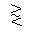
⪐ | 
⪠ | 
⪰ | 
⫀ | 
⫐ | 
⫠ | 
⫰ | 0 |
|---|
| 1 | 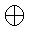
⨁ | 
⨑ | 
⨡ | 
⨱ | 
⩁ | 
⩑ | 
⩡ | 
⩱ |
⪁ | 
⪑ | 
⪡ | 
⪱ | 
⫁ | 
⫑ | 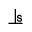
⫡ | 
⫱ | 1 |
|---|
| 2 | 
⨂ | 
⨒ | 
⨢ | 
⨲ | 
⩂ | 
⩒ | 
⩢ | 
⩲ | 
⪂ | 
⪒ | 
⪢ | 
⪲ | 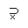
⫂ | 
⫒ | 
⫢ | 
⫲ | 2 |
|---|
| 3 | 
⨃ | 
⨓ | 
⨣ | 
⨳ | 
⩃ | 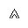
⩓ | 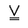
⩣ | 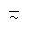
⩳ | 
⪃ | 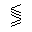
⪓ | 
⪣ | 
⪳ | 
⫃ | 
⫓ | 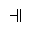
⫣ | 
⫳ | 3 |
|---|
| 4 |
⨄ | 
⨔ | 
⨤ | 
⨴ |
⩄ | 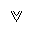
⩔ | 
⩤ | 
⩴ | 
⪄ | 
⪔ | 
⪤ | 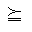
⪴ | 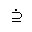
⫄ | 
⫔ | 
⫤ | 
⫴ | 4 |
|---|
| 5 | 
⨅ | 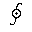
⨕ | 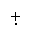
⨥ | 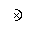
⨵ | 
⩅ | 
⩕ | 
⩥ | 
⩵ | 
⪅ | 
⪕ |
⪥ | 
⪵ | 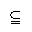
⫅ | 
⫕ | 
⫥ | 
⫵ | 5 |
|---|
| 6 | 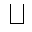
⨆ | 
⨖ | 
⨦ | 
⨶ | 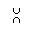
⩆ | 
⩖ | 
⩦ | 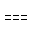
⩶ | 
⪆ |
⪖ |
⪦ | 
⪶ | 
⫆ | 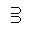
⫖ | 
⫦ | 
⫶ | 6 |
|---|
| 7 | 
⨇ | 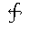
⨗ | 
⨧ | 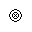
⨷ | 
⩇ | 
⩗ | 
⩧ | 
⩷ | 
⪇ | 
⪗ |
⪧ | 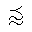
⪷ | 
⫇ | 
⫗ | 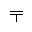
⫧ | 
⫷ | 7 |
|---|
| 8 | 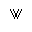
⨈ |
⨘ | 
⨨ | 
⨸ | 
⩈ | 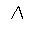
⩘ | 
⩨ | 
⩸ | 
⪈ | 
⪘ | 
⪨ | 
⪸ | 
⫈ | 
⫘ | 
⫨ |
⫸ | 8 |
|---|
| 9 | 
⨉ | 
⨙ | 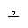
⨩ | 
⨹ | 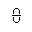
⩉ | 
⩙ | 
⩩ | 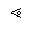
⩹ | 
⪉ | 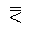
⪙ |
⪩ | 
⪹ | 
⫉ | 
⫙ | 
⫩ | 
⫹ | 9 |
|---|
| A | 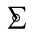
⨊ | 
⨚ | 
⨪ | 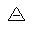
⨺ | 
⩊ | 
⩚ | 
⩪ | 
⩺ | 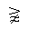
⪊ | 
⪚ | 
⪪ | 
⪺ | 
⫊ | 
⫚ | 
⫪ | 
⫺ | A |
|---|
| B | 
⨋ | 
⨛ | 
⨫ | 
⨻ | 
⩋ | 
⩛ | 
⩫ | 
⩻ | 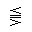
⪋ | 
⪛ | 
⪫ | 
⪻ | 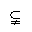
⫋ | 
⫛ | 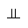
⫫ |
⫻ | B |
|---|
| C | 
⨌ | 
⨜ | 
⨬ | 
⨼ | 
⩌ | 
⩜ | 
⩬ | 
⩼ | 
⪌ | 
⪜ | 
⪬ | 
⪼ | 
⫌ | 
⫝̸ | 
⫬ | 
⫼ | C |
|---|
| D | 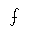
⨍ |
⨝ | 
⨭ | 
⨽ | 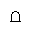
⩍ | 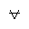
⩝ | 
⩭ |
⩽ | 
⪍ | 
⪝ | 
⪭ | 
⪽ | 
⫍ | 
⫝ | 
⫭ | 
⫽ | D |
|---|
| E | 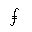
⨎ | 
⨞ | 
⨮ | 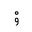
⨾ | 
⩎ | 
⩞ | 
⩮ | 
⩾ | 
⪎ | 
⪞ |
⪮ | 
⪾ | 
⫎ | 
⫞ | 
⫮ | 
⫾ | E |
|---|
| F | 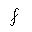
⨏ | 
⨟ |
⨯ | 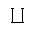
⨿ | 
⩏ | 
⩟ | 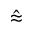
⩯ | 
⩿ | 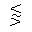
⪏ | 
⪟ | 
⪯ | 
⪿ | 
⫏ | 
⫟ | 
⫯ | 
⫿ | F |
|---|
| | 02A0 | 02A1 | 02A2 | 02A3 | 02A4 | 02A5 | 02A6 | 02A7 | 02A8 | 02A9 | 02AA | 02AB | 02AC | 02AD | 02AE | 02AF | |
|---|
Key
| Cell Style | Status |
|---|
| | Unicode Character (Unicode 14) |
| X | Character styled with the STIX Fonts |
Table headings link to the (PDF) Code charts at the Unicode site.